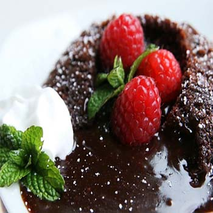

Chocolate Molten Lava Cake...MMmmm...

Ingredients
6 (1-ounce) squares bittersweet chocolate
2 (1-ounce) squares semisweet chocolate
10 tablespoons (1 1/4 stick) butter
1/2 cup all-purpose flour
1 1/2 cups confectioners' sugar
3 large eggs
3 egg yolks
1 teaspoon vanilla extract
2 tablespoons orange liqueur
Directions
Preheat oven to 425 degrees F.
Grease 6 (6-ounce) custard cups. Melt the chocolates and butter in the microwave, or in a double boiler. Add the flour and sugar to chocolate mixture. Stir in the eggs and yolks until smooth. Stir in the vanilla and orange liqueur. Divide the batter evenly among the custard cups. Place in the oven and bake for 14 minutes. The edges should be firm but the center will be runny. Run a knife around the edges to loosen and invert onto dessert plates.